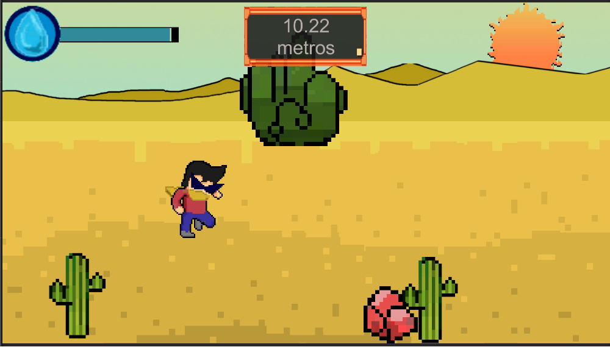

Beyond the Dunes
Este fue mi primer proyecto de programación, realizado paralelamente a cuando comenzaba la carrera de Ingenieria Informática en CUCEI. Para este proyecto me guíe en la convocatoria LEIVA de ese año (2020) los cuales incluían una serie de videos para la planificacion de tu videjuego. Esto tambien significo mi primer contacto con Unity, programando en C#, sin saberlo utilizando POO, pero posteriormente al conocerlo, comenzaria a utilizarlo a conciencia. Fue una experiencia que me enseñó muchísimo como punto de partida. Lo nombro como 'prototipo' porque aún espero volver al proyecto y poder concluirlo satisfactoriamente. Debido a que fue un proyecto personal yo me encaje de manejar las interfaces, la programación del codigo, y la creación del resto de recursos multimedia empleado incluyendo Sprites, SFX y más
El proyecto me requirió aprender a gestionar mis tiempos, además de aceptar mis limitaciones de tiempo y conocimiento para desarrollar el mejor producto posible con mis capacidades en ese momento. El toque de queda de la entrega del proyecto fue en diciembre, pero yo continué trabajando en él ocasionalmente. Terminó elegido para formar parte de una muestra de juegos desarollados por la convocatoria LEIVA durante ese año: https://leiva.cenart.gob.mx/Muestra/# (2020, muestra 5)